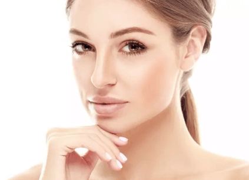

很多人把苹果的保健功能归于富含维生素C上，但其实，苹果的维C含量并不高。
除了苹果，我们耳熟能详的维C界明星还有橙子，猕猴桃、柠檬等水果。
但现在，水果界更有一股“红军”能量，在美容界爆红了起来！在公布TA们名字前，先让我们来看下
维C红色能量爆红美容界的原因一提到维生素C，很多人脑海中会自动想到“美白”。但维C除了在美白上的强大效果外，更可改善肌肤状况，淡化岁月痕迹。维C具有强大的抗氧化功能，能帮助刺激肌肤的胶原蛋白合成，从而帮助肌肤减缓衰老，更显年轻。
富含甩出苹果两条街的大量维生素C，帮助抚平细纹、改善暗沉、恢复肌肤光泽。
更富含两大抗氧化成份——红石榴多酚和花青素。它们能帮助抵御肌肤氧化，并提高肌肤免疫力。
石榴中含有的鞣花酸被证明能够有效抑制胶原蛋白的分解，让肌肤重现丰盈。
此外，它还含有亚麻油酸，维生素B6、维生素E、钙、镁、锌、叶酸等有效成分。
科学证实樱桃果实富含维生素C，已知植物中维生素Ｃ含量最高的是西印度樱桃，惯称“针叶樱桃”，每100克中维C含量达1500-2000毫克，将近是加利福尼亚橙的30多倍，一颗樱桃几乎就可满足人体对维C的日需求量，是名副其实的“维生素Ｃ之王”。
（数据来源：美国农业部营养数据库 ）
卡姆果外形似葡萄，产于秘鲁，由于维C含量高而广受饮食界和美容界的关注。每100克中维C含量可达2000~3000mg毫克，几乎是柠檬的50倍。
除维生素C外，卡姆果还有大量黄酮类、花青素类物质，有效帮助肌肤回复年轻状态。
（数据来源：美国农业部营养数据库、知乎）
所含维生素C复合成分帮助刺激胶原蛋白生成，延缓衰老进程，重现肌肤紧致和年轻。
富含抗氧化成份，帮助肌肤对抗自由基和环境污染的伤害，有效改善疲惫的肌肤状态，使肌肤容光焕发。